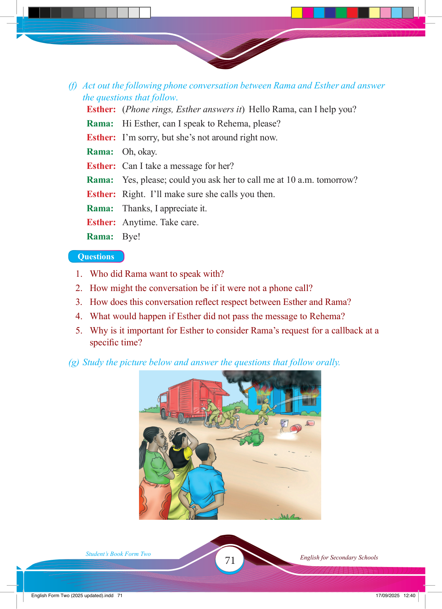

71
Student’s Book Form Two
English for Secondary Schools
(f) Act out the following phone conversation between Rama and Esther and answer the questions that follow.
Esther: (Phone rings, Esther answers it) Hello Rama, can I help you?
Rama: Hi Esther, can I speak to Rehema, please?
Esther: I’m sorry, but she’s not around right now.
Rama: Oh, okay.
Esther: Can I take a message for her?
Rama: Yes, please; could you ask her to call me at 10 a.m. tomorrow?
Esther: Right. I’ll make sure she calls you then.
Rama: Thanks, I appreciate it.
Esther: Anytime. Take care.
Rama: Bye!
Questions
1. Who did Rama want to speak with?
2. How might the conversation be if it were not a phone call?
3. How does this conversation refl ect respect between Esther and Rama?
4. What would happen if Esther did not pass the message to Rehema?
5. Why is it important for Esther to consider Rama’s request for a callback at a specifi c time?
(g) Study the picture below and answer the questions that follow orally.
17/09/2025 12:40